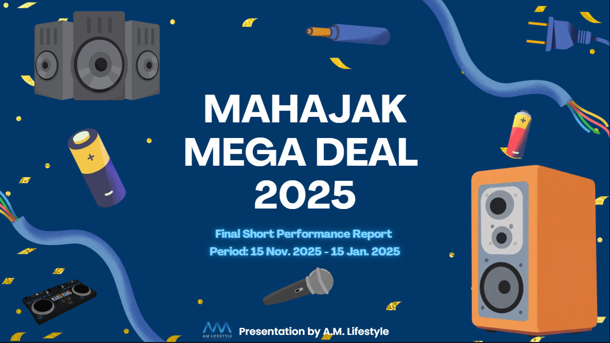

Mahajak Mega Deal
JBL · Harman/Kardon · JBL Quantum

Season 1 · Nov 2024 – Jan 2025: Sales push for three electronics brands with very different buyers. I split ฿1.15M across Meta, Google and TikTok and gave each brand its own persona: gamers for Quantum, music lovers for JBL, home-office and bookish buyers for Harman/Kardon, then rebuilt search and shopping keywords around high-intent queries.
Peak ROAS
153.7×
Purchases
708
+271% vs KPI
Season 2 · Nov 2025 – Jan 2026: Awareness push across seven brand lines, from Partybox and Home Audio to JBL PRO, Shure and AlphaTheta. All four headline KPIs beat target, at 128% to 594%.